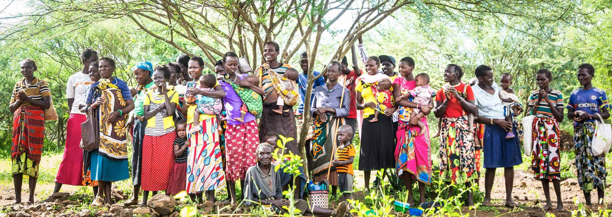
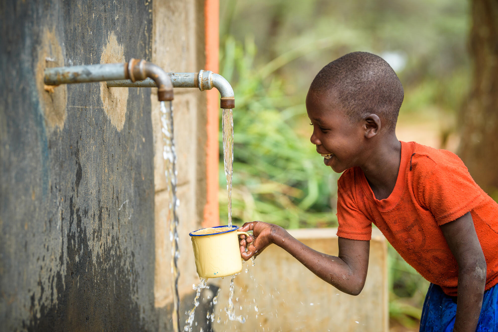
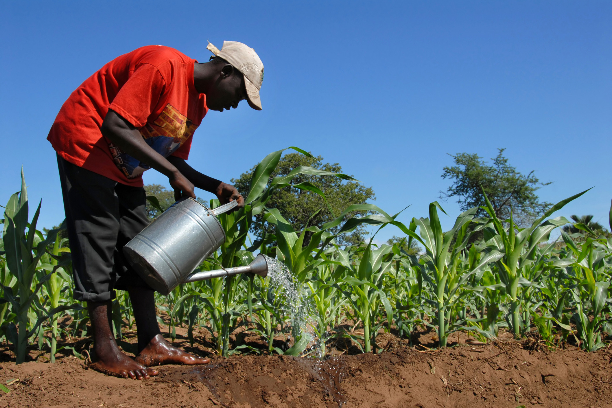

Featured Story
Community Development
January 20, 2025
Sarah Johnson
Reflecting on 12 months of community development initiatives that have transformed lives across five regions. From establishing sustainable water systems to empowering local entrepreneurs, discover how collaborative efforts have created lasting change that continues to benefit thousands of families.
Read Full Story

WASH
January 15, 2025
Dr. Michael Nguema
Our latest WASH initiative has brought clean water to over 500 families in remote villages. This comprehensive project included drilling boreholes, installing solar-powered pumps, and training local communities in maintenance and hygiene practices. The impact has been profound: a 60% reduction in waterborne diseases and increased school attendance as children no longer need to walk miles for water.
Read More

Agriculture
January 10, 2025
Agnes Mballa
Climate change poses significant challenges to smallholder farmers. Our climate-smart agriculture program introduces drought-resistant crops, sustainable irrigation techniques, and soil conservation methods. Over 200 farmers have increased their yields by 40% while reducing water usage and improving soil health for future generations.
Read More
Women Empowerment
June 2025
Patricia Ewane
Meet the inspiring women who have transformed their communities through entrepreneurship. Our skills training and microfinance programs have enabled 150 women to start successful businesses, from poultry farming to textile production. These women are now role models, creating jobs and driving economic growth in their communities.
Read More